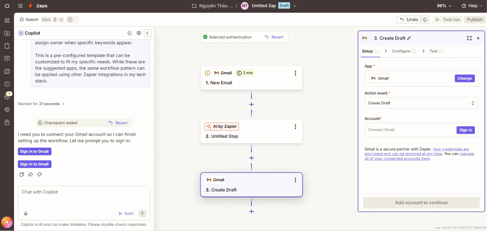

BÁO CÁO THIẾT KẾ QUY TRÌNH LÀM VIỆC TỰ ĐỘNG ĐƠN GIẢN
Họ tên: Đinh Lê Thảo Nguyên
MSV: 25051013
I. MỤC TIÊU VÀ TỔNG QUAN QUY TRÌNH
Trong hoạt động quản lý Câu lạc bộ (CLB) sinh viên, việc tiếp nhận và tương tác kịp thời với thành viên mới đóng vai trò quyết định đến mức độ gắn kết và ấn tượng ban đầu. Quy trình này hướng tới việc ứng dụng nền tảng tự động hóa trung gian (Zapier) để kết nối hai ứng dụng phổ biến: Google Forms (Nơi tiếp nhận thông tin đăng ký của thành viên) và Gmail (Hệ thống tự động xử lý và gửi thư phản hồi), giúp số hóa toàn bộ luồng công việc thủ công trước đây.
II. CHI TIẾT CÁC BƯỚC THIẾT LẬP QUY TRÌNH TRÊN ZAPIER
1. Thiết lập Trình kích hoạt - Trigger (Google Forms)
Ứng dụng chọn (App): Google Forms.
Sự kiện kích hoạt (Event): New Form Response (Khởi chạy quy trình bất cứ khi nào có một câu trả lời mới được ghi nhận trong biểu mẫu).
Cấu hình chi tiết: Thực hiện liên kết và cấp quyền truy cập bảo mật vào tài khoản Google Drive cá nhân chứa form. Tại mục cấu hình dữ liệu, chọn chính xác tên biểu mẫu "Form Đăng ký Thành viên CLB".
Kiểm tra dữ liệu mẫu (Test Trigger): Nhấn chạy thử nghiệm để Zapier kéo về một bản ghi dữ liệu thực tế gần nhất, đảm bảo hệ thống đã nhận diện chính xác các trường dữ liệu động như: Họ và tên, Email, Số điện thoại, Ban chuyên môn.
(Vị trí chèn ảnh minh họa: Bạn tiến hành chụp lại giao diện thiết lập bước Trigger này trên Zapier để chèn vào báo cáo).
2. Thiết lập Hành động - Action (Gmail)
Ứng dụng hành động (App): Gmail.
Sự kiện hành động (Event): Send Email (Tự động khởi tạo và phân phối một thư điện tử mới).
Cấu hình tài khoản (Account): Liên kết với tài khoản Gmail chính thức của Trưởng CLB hoặc hòm thư đại diện chung của Ban điều hành.

3. Cấu hình nội dung Email tự động dựa trên biến dữ liệu động (Dynamic Data)
Để đảm bảo email mang tính cá nhân hóa và chuyên nghiệp, các nội dung được cấu hình chi tiết thông qua tính năng ánh xạ dữ liệu (Data Mapping) của Zapier như sau:
Trường To : Chọn trường dữ liệu {Email} lấy trực tiếp từ câu trả lời trong Google Forms. Trường này sẽ tự động thay đổi chính xác theo email của từng ứng viên điền đơn.
Trường Subject: [CLB SINH VIÊN] CHÀO MỪNG BẠN ĐÃ TRỞ THÀNH MỘT MẢNH GHÉP CỦA CHÚNG MÌNH! 🎉
Trường Body: Thiết lập văn bản chi tiết có lồng ghép các trường thông tin động của thành viên để tạo sự gần gũi:"Chào {Họ và tên}, Thầy/Cô và Ban điều hành CLB rất vui mừng khi nhận được đơn đăng ký của bạn. Thông tin lựa chọn ứng tuyển vào {Ban chuyên môn} của bạn đã được hệ thống ghi nhận thành công. Ban Nhân sự sẽ sớm liên hệ với bạn qua số điện thoại {Số điện thoại} để phổ biến lịch sinh hoạt định kỳ. Chúc bạn có những trải nghiệm tuyệt vời cùng CLB nhé!"
4. Kiểm thử hệ thống và Kích hoạt chính thức (Test & Publish)
Nhấn nút Test step để kiểm tra tính ổn định của luồng công việc. Khi hệ thống trả về trạng thái Success , kiểm tra trực tiếp trong hộp thư Gmail xem định dạng văn bản và các biến hiển thị đã chuẩn xác chưa.
Tiến hành bật công tắc kích hoạt và bấm Publish để đưa quy trình hoạt động tự động theo thời gian thực.
III. PHÂN TÍCH LỢI ÍCH CỦA VIỆC TỰ ĐỘNG HÓA QUY TRÌNH
Việc thay thế phương thức vận hành thủ công bằng hệ thống tự động hóa mang lại ba lợi ích cốt lõi cho ban điều hành:
Tối ưu hóa thời gian và năng suất lao động: Trước đây, Ban Nhân sự phải theo dõi trang tính trực tuyến, sao chép từng địa chỉ email và soạn thư gửi thủ công, mất trung bình từ 3 - 5 phút cho mỗi thành viên. Hệ thống tự động hoạt động liên tục 24/7 giúp loại bỏ hoàn toàn các thao tác lặp đi lặp lại này, giải phóng thời gian để ban điều hành tập trung phát triển ý tưởng sinh hoạt và các dự án chuyên sâu.
Nâng cao hình ảnh chuyên nghiệp và trải nghiệm thành viên: Thành viên mới nhận được thư chào mừng cá nhân hóa ngay lập tức sau khi bấm "Nộp đơn". Sự phản hồi tức thì này tạo cảm giác được quan tâm, thể hiện sự chỉn chu, khoa học trong khâu tổ chức, từ đó gia tăng độ tin cậy và sự gắn kết của thành viên ngay từ ngày đầu gia nhập.
Triệt tiêu sai sót dữ liệu do con người: Thao tác thủ công rất dễ dẫn đến việc nhập sai địa chỉ email, gửi trùng lặp hoặc bỏ sót ứng viên khi số lượng đơn nộp tăng cao đột biến. Công nghệ số đảm bảo dữ liệu đầu vào từ form được trích xuất nguyên vẹn, đồng bộ và phân phối chính xác tuyệt đối mà không có độ trễ.
IV. ĐỀ XUẤT CÁC Ý TƯỞNG TỰ ĐỘNG HÓA KHÁC ÁP DỤNG CHO CLB
1. Ý tưởng 1: Tự động nhắc nhở và phân phối lịch họp định kỳ hàng tuần
Công cụ kết nối: Google Calendar $\rightarrow$ Kênh Chat chung (Discord / Zalo / Messenger via Webhook).
Mô tả cách vận hành: Khi Ban điều hành tạo một sự kiện lịch họp chung trên Google Calendar (có đính kèm nội dung chương trình họp và link phòng họp trực tuyến như Google Meet/Zoom). Đúng 2 tiếng trước khi cuộc họp bắt đầu, Zapier sẽ tự động quét sự kiện và gửi tin nhắn nhắc nhở đồng loạt vào nhóm chat của CLB, giúp thành viên không bỏ lỡ lịch họp mà không tốn công sức nhắc nhở thủ công của Ban nhân sự.
2. Ý tưởng 2: Quản lý tiến độ công việc và tự động phân công nhiệm vụ giữa các ban
Công cụ kết nối: Google Forms (Form đăng ký yêu cầu hỗ trợ) →Trello (Hoặc Notion).
Mô tả cách vận hành: Khi Ban Truyền thông điền thông tin yêu cầu thiết kế ấn phẩm hay viết bài vào form, Zapier sẽ tự động phân tích dữ liệu và khởi tạo một thẻ công việc (Card) mới trên bảng Trello của Ban Kỹ thuật. Thẻ này tự động bao gồm: mô tả yêu cầu, phân loại mức độ ưu tiên và thời hạn hoàn thành (Deadline). Trưởng ban Kỹ thuật chỉ cần vào chỉ định nhân sự thực hiện mà không cần qua các khâu họp bàn rườm rà.
3. Ý tưởng 3: Tự động hóa việc thu thập, lưu trữ và đối soát biên lai đóng quỹ CLB
Công cụ kết nối: Gmail (Email gửi biên lai chuyển khoản của thành viên) →Google Sheets & Google Drive.
Mô tả cách vận hành: Khi các thành viên đóng quỹ CLB và gửi email thông báo kèm ảnh chụp màn hình giao dịch theo cú pháp quy định. Hệ thống tự động lọc các email này, trích xuất thông tin người gửi, ngày giờ vào một dòng mới trên file Google Sheets quản lý tài chính. Đồng thời, tệp ảnh biên lai đính kèm sẽ tự động được lưu trữ vào một thư mục riêng biệt trên Google Drive, giúp Ban Tài chính đối soát số liệu nhanh chóng, minh bạch cuối kỳ.